Chủ đề 6: Giao việc và trách nhiệm giải trình trong đội ngũ vận hành tốc độ cao
Topic 6: Delegation & Accountability in Fast-Paced Teams — bản đối chiếu Anh – Việt
PGS. Agnis Stibe · 69 slide
Quy ước của bản dịch. Mỗi slide là một khối: cột bên trái là nguyên văn tiếng Anh (màu xám), cột bên phải là bản tiếng Việt (màu đen). Nội dung được dịch sát theo từng slide, không lược bỏ.
Đây là bài giảng dùng rất nhiều hình ảnh và video. Nhiều slide chỉ có một vài chữ lớn hoặc hoàn toàn không có chữ. Với những slide đó, phần mô tả hình ảnh được ghi bằng chữ nghiêng màu xám để người đọc hình dung được mạch trình bày; phần mô tả này là ghi chú của bản dịch, không phải nội dung gốc trên slide.
Thuật ngữ chuyên môn được dịch sang tiếng Việt kèm nguyên bản tiếng Anh trong ngoặc ở lần xuất hiện đầu tiên. Tên riêng, tên tổ chức và địa chỉ liên hệ giữ nguyên. Accountability được dịch là “trách nhiệm giải trình”, ownership là “tinh thần làm chủ”, và HAI (Human Artificial Intelligence) là “Trí tuệ Nhân tạo mang tính Người”.
Topic 6: Delegation & Accountability in Fast-Paced Teams
Chủ đề 6: Giao việc và trách nhiệm giải trình trong đội ngũ vận hành tốc độ cao
RMIT University Vietnam, Saigon South Campus
me.grow — RMIT & Zalo
Đại học RMIT Việt Nam, cơ sở Nam Sài Gòn
me.grow — RMIT & Zalo
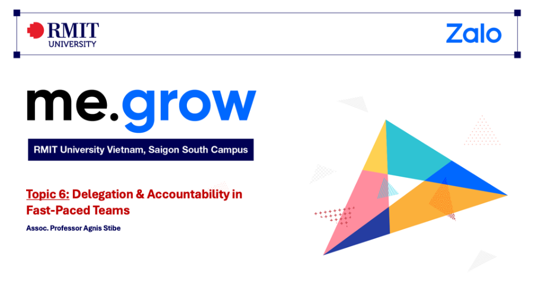
| Challenge Thách thức |
Typical management situation Tình huống quản lý thường gặp |
Leadership question Câu hỏi dành cho người lãnh đạo |
| 1. “It’s faster if I do it myself.” 1. “Tự làm cho nhanh.” | Under deadline pressure, the manager takes work back from the team. Dưới áp lực thời hạn, người quản lý lấy lại phần việc đã giao cho đội ngũ. | What should I delegate even when delegation initially takes longer? Việc gì tôi vẫn nên giao, dù ban đầu giao việc mất nhiều thời gian hơn? |
| 2. Delegation without real authority 2. Giao việc mà không giao quyền | An employee owns a task but still needs the manager’s approval for every meaningful decision. Nhân viên phụ trách một đầu việc nhưng vẫn phải xin phê duyệt cho mọi quyết định đáng kể. | Am I delegating responsibility and decision rights? Tôi có đang giao cả trách nhiệm và quyền ra quyết định hay không? |
| 3. Accountability is unclear 3. Trách nhiệm giải trình không rõ ràng | Product, tech, marketing and operations are involved, but nobody feels ultimately responsible. Sản phẩm, kỹ thuật, marketing và vận hành đều tham gia, nhưng không ai cảm thấy mình chịu trách nhiệm cuối cùng. | Who is the single accountable owner? Ai là người duy nhất chịu trách nhiệm về kết quả? |
| 4. The best people get everything 4. Người giỏi nhất gánh mọi việc | High performers repeatedly receive critical assignments until they become overloaded. Những nhân sự xuất sắc liên tục được giao các nhiệm vụ quan trọng cho đến khi họ quá tải. | Am I optimizing today’s delivery at the expense of tomorrow’s capability? Tôi có đang tối ưu kết quả hôm nay bằng cách đánh đổi năng lực của ngày mai? |
| 5. Everything becomes “urgent” 5. Mọi việc đều thành “khẩn cấp” | Multiple senior stakeholders request immediate action and the manager passes all priorities to the team. Nhiều lãnh đạo cấp cao cùng yêu cầu xử lý ngay, và người quản lý chuyển toàn bộ ưu tiên đó xuống đội ngũ. | What should we stop, postpone or deprioritize? Chúng ta nên dừng, hoãn hay hạ ưu tiên việc gì? |
| Challenge Thách thức |
Typical management situation Tình huống quản lý thường gặp |
Leadership question Câu hỏi dành cho người lãnh đạo |
| 6. Manager becomes the decision bottleneck 6. Người quản lý thành nút thắt ra quyết định | Team members escalate even relatively small decisions upward. Thành viên đội ngũ đẩy lên cấp trên cả những quyết định khá nhỏ. | Which decisions could the team safely make without me? Những quyết định nào đội ngũ có thể tự đưa ra một cách an toàn mà không cần đến tôi? |
| 7. Micromanagement vs. visibility 7. Quản lý vi mô và nhu cầu nắm tình hình | The manager wants accountability and therefore asks for constant updates. Người quản lý muốn có trách nhiệm giải trình nên liên tục yêu cầu cập nhật. | How can I maintain visibility without controlling execution? Làm sao để nắm được tình hình mà không kiểm soát cách thực thi? |
| 8. Cross-functional dependency 8. Phụ thuộc liên bộ phận | Your team owns the result but needs another team to deliver something first. Đội của bạn chịu trách nhiệm về kết quả nhưng phải chờ một bộ phận khác hoàn thành phần việc của họ trước. | How do we create accountability when authority is distributed? Làm sao tạo ra trách nhiệm giải trình khi quyền hạn bị phân tán? |
| 9. AI makes ownership ambiguous 9. AI làm mờ ranh giới trách nhiệm | AI produces analysis, content, code, summaries or recommendations that employees use. AI tạo ra phân tích, nội dung, mã nguồn, bản tóm tắt hoặc đề xuất mà nhân viên đem ra sử dụng. | Who remains accountable for an AI-assisted decision or output? Ai vẫn là người chịu trách nhiệm cho một quyết định hay sản phẩm có AI hỗ trợ? |
| 10. Wrong human–AI task allocation 10. Phân bổ việc giữa người và AI sai chỗ | People spend hours on work AI could handle, while AI is used for decisions requiring contextual human judgment. Con người dành hàng giờ cho việc AI có thể làm, còn AI lại được dùng cho những quyết định cần phán đoán theo bối cảnh của con người. | Should this task be Human, AI, or HAI? Việc này nên do Con người, AI, hay HAI đảm nhận? |
EXAMPLES
VÍ DỤ
- “Everything needs my approval.” → delegation + empowerment
- “Everyone is involved, but nobody owns the outcome.” → accountability + decision rights
- “My best people are overloaded.” → capability-based delegation + cognitive load
- “AI makes us faster, but who is responsible for what it produces?” → HAI + human accountability
- “Everyone is busy, but important things are still late.” → prioritization + bottlenecks + team cognitive load
- “Việc gì cũng phải qua tôi phê duyệt.” → giao việc + trao quyền
- “Ai cũng tham gia, nhưng không ai làm chủ kết quả.” → trách nhiệm giải trình + quyền ra quyết định
- “Những người giỏi nhất của tôi đang quá tải.” → giao việc theo năng lực + tải nhận thức
- “AI giúp chúng ta nhanh hơn, nhưng ai chịu trách nhiệm cho những gì nó tạo ra?” → HAI + trách nhiệm của con người
- “Ai cũng bận, nhưng những việc quan trọng vẫn trễ.” → sắp xếp ưu tiên + nút thắt + tải nhận thức của đội ngũ
KEY QUESTION
CÂU HỎI TRỌNG TÂM
Slide không có chữ. Hình minh hoạ một phòng họp đầy người làm việc trước màn hình, phía trên là đường biểu đồ màu đỏ đi xuống.
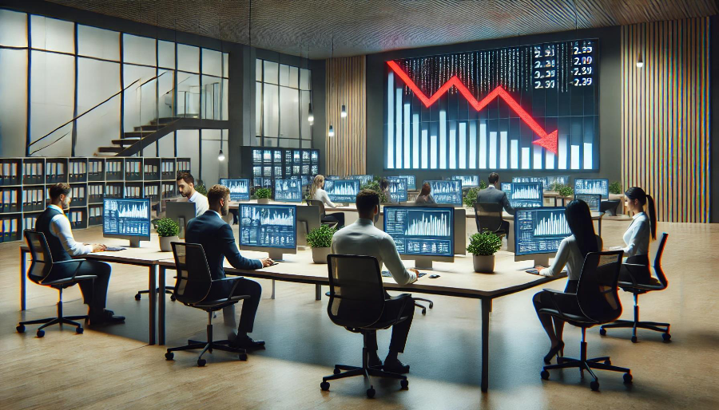
THINKING
Human with AI
TƯ DUY
Con người cùng AI
Slide dùng video dọc quay trong một cửa hàng; chữ “CRITICAL” mờ dần để còn lại “THINKING”, rồi hiện dòng “Human with AI”.
Hai slide không có chữ. Slide 08: hình minh hoạ một người thuyết trình trước bảng ghi các chữ TRAINING, PRACTICE, SKILLS, KNOWLEDGE (đào tạo, thực hành, kỹ năng, tri thức). Slide 09: một người ngồi trước máy tính, phía trên là các bong bóng suy nghĩ ghi BIASES, NEGATIVE THOUGHTS, PRODUCTIVE MINDSET (thiên kiến, suy nghĩ tiêu cực, lối nghĩ hiệu quả).
HUMANE — ARTIFICIAL
TRANSFORMATION · TRANSITION · TRANSACTION
NHÂN BẢN — NHÂN TẠO
CHUYỂN HOÁ · CHUYỂN TIẾP · GIAO DỊCH
Slide dùng hình củ cà rốt và chiếc gậy — hai đòn thúc đẩy quen thuộc — để đặt ba mức độ tác động cạnh nhau: giao dịch, chuyển tiếp và chuyển hoá.
SOURCE: ONLINE
NGUỒN: TRỰC TUYẾN
Đoạn phim trắng đen về thí nghiệm quay mặt trong thang máy: một người lạ dần làm theo hướng của cả nhóm.
TRANSFORMATION DESIGN FRAMEWORK
KHUNG THIẾT KẾ CHUYỂN HOÁ
2 CURVE — attitude, environment, − +
3 METRIC
4 CIRCLES — self-contained, self-driven, January 1st
5 ARCHITECTURE
6 SOCIUM
7 MODERATION — amplify, others, decrease, reverse, dynamic design
8 ETHICS
SOURCE: ONLINE
2 ĐƯỜNG CONG — thái độ, môi trường, − +
3 THƯỚC ĐO
4 VÒNG TRÒN — tự thân, tự thúc đẩy, ngày 1 tháng 1
5 KIẾN TRÚC
6 CỘNG ĐỒNG (socium)
7 ĐIỀU ĐỘ — khuếch đại, người khác, giảm bớt, đảo chiều, thiết kế động
8 ĐẠO ĐỨC
NGUỒN: TRỰC TUYẾN
Ba slide liên tiếp dựng dần sơ đồ khung: slide 13 hiện bốn nguyên tắc đầu, slide 14 chèn một đoạn video, slide 15 hiện đủ tám nguyên tắc xếp vòng quanh. Phần sau của bài giảng đi qua từng nguyên tắc một.
TRIANGLE
TAM GIÁC
CURVE
ĐƯỜNG CONG
METRIC
THƯỚC ĐO
CIRCLES
VÒNG TRÒN
ARCHITECTURE
KIẾN TRÚC
SOCIUM
CỘNG ĐỒNG
MODERATION
ĐIỀU ĐỘ
ETHICS
ĐẠO ĐỨC
ATTITUDE · BEHAVIOR · ENVIRONMENT
THÁI ĐỘ · HÀNH VI · MÔI TRƯỜNG
Ba đỉnh của một tam giác: muốn thay đổi hành vi, phải làm việc đồng thời với thái độ và môi trường.
Slide không có chữ. Ảnh một chiếc thùng giấy khổng lồ hình chiếc xe đạp dựng trên phố — môi trường được thiết kế để gợi ra hành vi.
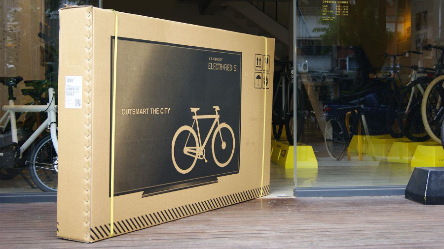
ATTITUDE · ENVIRONMENT · − +
SOURCE: ONLINE
THÁI ĐỘ · MÔI TRƯỜNG · − +
NGUỒN: TRỰC TUYẾN
Quan hệ giữa thái độ và môi trường không phải đường thẳng: cùng một can thiệp có thể cho kết quả âm hoặc dương tuỳ mức độ. Slide 21 minh hoạ bằng đoạn phim đèn tín hiệu sang đường có hình người nhảy múa.
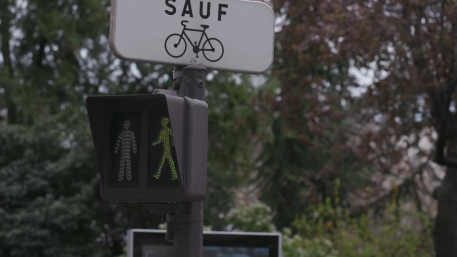
PEOPLE METRIC
BEHAVIOR — TODAY
TRANSFORMATION — FUTURE
THƯỚC ĐO CON NGƯỜI
HÀNH VI — HÔM NAY
CHUYỂN HOÁ — TƯƠNG LAI
Đo hành vi ở hiện tại để thấy mức chuyển hoá trong tương lai.
HÀNH VI — HÔM NAY
THƯỚC ĐO CON NGƯỜI
CHUYỂN HOÁ — TƯƠNG LAI
Ba slide không có chữ ngoài hình. Chuỗi ví dụ đo hành vi tại chỗ: quảng cáo dán trên cửa thang máy so với lối cầu thang; cảm biến theo dõi người qua lại trong một sảnh lớn; bảng hiển thị “TODAY’S VISITORS — 47% cầu thang / 53% thang máy” (KHÁCH HÔM NAY) và biểu đồ tỷ lệ thay đổi theo ngày.
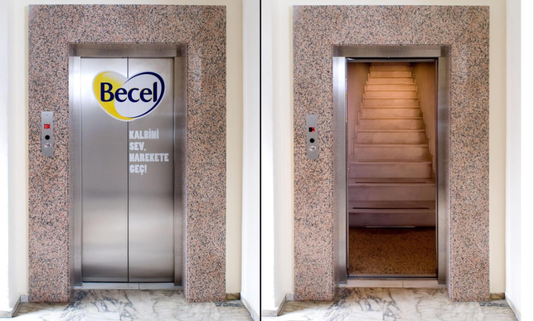
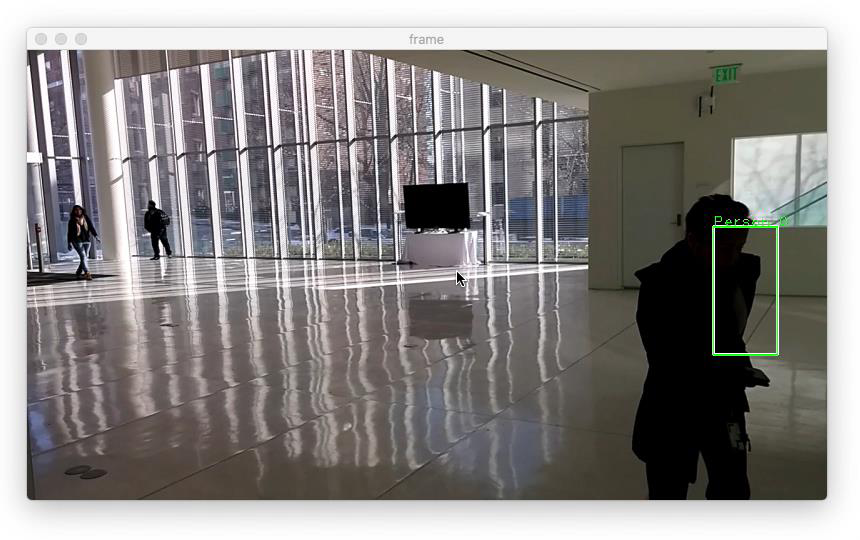
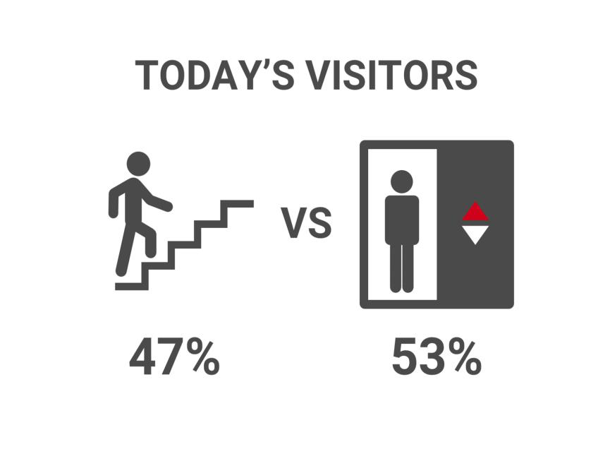
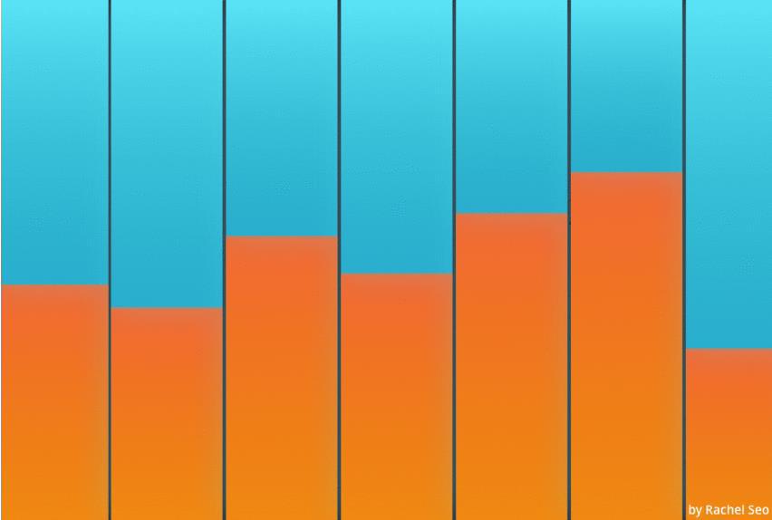
STAGES OF TRANSFORMATION
SELF-CONTAINED · JANUARY 1st · SELF-DRIVEN · IDENTITY CHANGE · SOCIAL PULL · INFLUENCING OTHERS
SOURCE: ONLINE
CÁC GIAI ĐOẠN CHUYỂN HOÁ
TỰ THÂN · NGÀY 1 THÁNG 1 · TỰ THÚC ĐẨY · THAY ĐỔI BẢN SẮC · SỨC HÚT XÃ HỘI · ẢNH HƯỞNG NGƯỜI KHÁC
NGUỒN: TRỰC TUYẾN
Các vòng tròn đồng tâm cho thấy chuyển hoá lan từ bản thân ra tới việc ảnh hưởng người khác. Slide 29 chiếu một đoạn trong chương trình Brain Games của National Geographic.
DATA → INTELLIGENCE → TRANSFORMATION
DỮ LIỆU → TRÍ TUỆ → CHUYỂN HOÁ
Slide 32 minh hoạ bằng hình một quầy thanh toán trong siêu thị: dữ liệu thu được ngay tại điểm hành vi diễn ra.
DỮ LIỆU
TRÍ TUỆ
CHUYỂN HOÁ
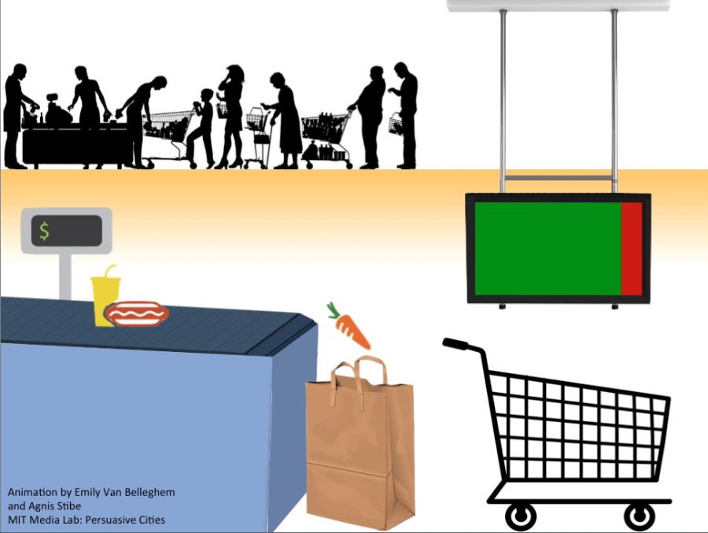
SOCIAL
COMPETITION · LEARNING · COMPARISON · COOPERATION · NORMS · FACILITATION · RECOGNITION
YẾU TỐ XÃ HỘI
CẠNH TRANH · HỌC HỎI · SO SÁNH · HỢP TÁC · CHUẨN MỰC · HỖ TRỢ · GHI NHẬN
Bảy đòn ảnh hưởng xã hội xếp quanh một vòng tròn — cũng chính là bảy cách để tạo tinh thần làm chủ trong một đội ngũ.
CẠNH TRANH
HỌC HỎI
SO SÁNH
HỢP TÁC
CHUẨN MỰC
HỖ TRỢ
GHI NHẬN
COMPETITION · LEARNING · COMPARISON · COOPERATION · NORMS · FACILITATION · RECOGNITION
SOURCE: ONLINE
Nov-13 → Dec-05 · 65% → 100%
CẠNH TRANH · HỌC HỎI · SO SÁNH · HỢP TÁC · CHUẨN MỰC · HỖ TRỢ · GHI NHẬN
NGUỒN: TRỰC TUYẾN
13/11 → 05/12 · 65% → 100%
Năm slide kể lại một nghiên cứu thực địa: bảng xếp hạng đội nhóm được chiếu trên màn hình công cộng tại nơi làm việc, kèm biểu đồ mức tham gia tăng từ 65% lên 100% sau vài tuần.
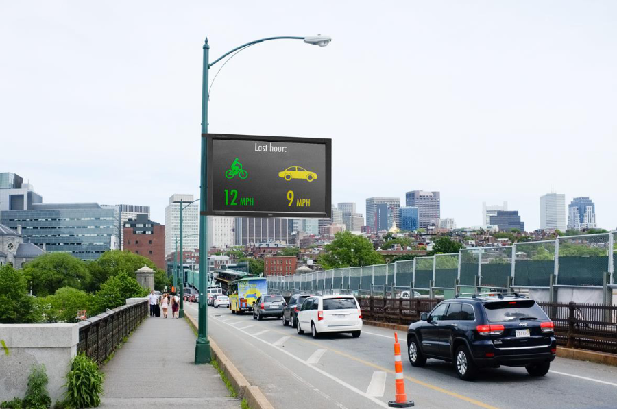
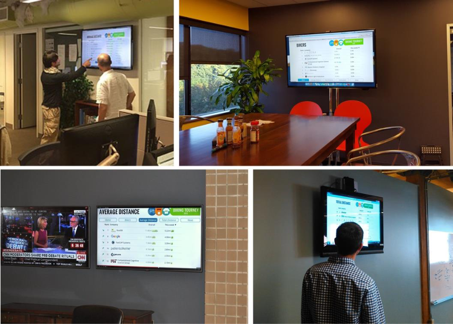
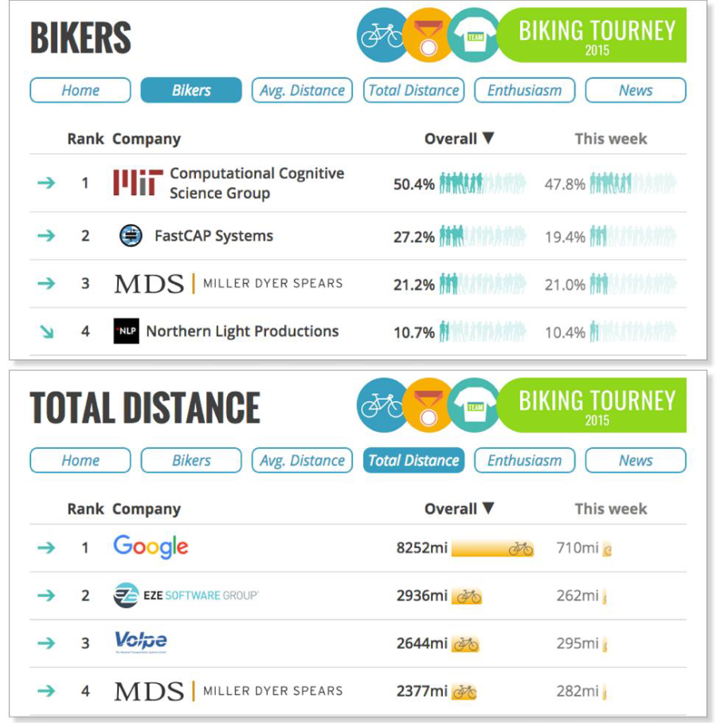
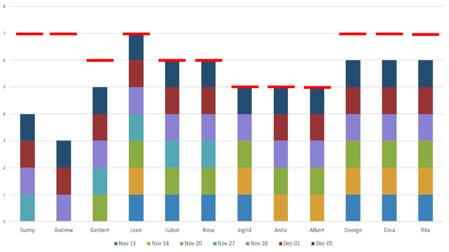
AMPLIFY · OTHERS · DECREASE · REVERSE · DYNAMIC DESIGN
SOURCE: ONLINE
12 · 74 · 0 · 3
KHUẾCH ĐẠI · NGƯỜI KHÁC · GIẢM BỚT · ĐẢO CHIỀU · THIẾT KẾ ĐỘNG
NGUỒN: TRỰC TUYẾN
12 · 74 · 0 · 3
Cùng một can thiệp cần được điều chỉnh liều lượng: khuếch đại, giảm bớt, đảo chiều hoặc để nó tự thay đổi theo bối cảnh. Slide 42 chiếu phóng sự “How Mumbai Police Is Telling You To Honk Responsibly” (Cảnh sát Mumbai dạy người dân bấm còi có trách nhiệm) — đèn đỏ kéo dài thêm mỗi khi tiếng còi quá ồn. Slide 43 đặt cạnh nhau các màn hình dự báo thời tiết với những con số khác nhau.
KHUẾCH ĐẠI
NGƯỜI KHÁC
GIẢM BỚT
ĐẢO CHIỀU
THIẾT KẾ ĐỘNG
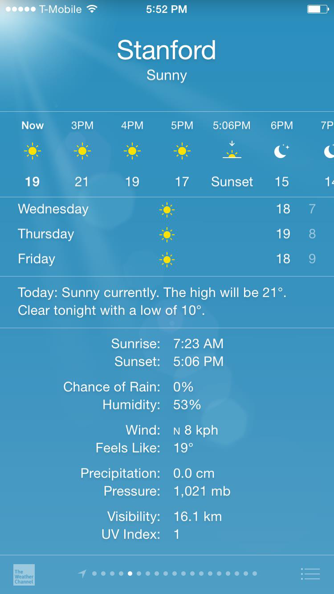
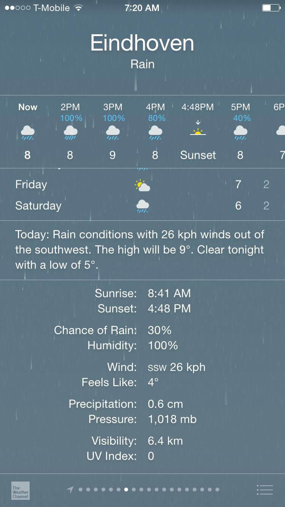
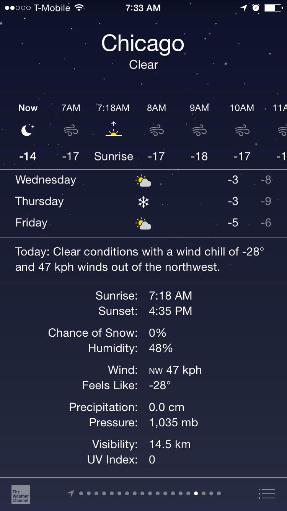
| Positive Tích cực |
Negative Tiêu cực |
|
| Intended Chủ đích |
TARGET ĐÚNG ĐÍCH — kết quả mong muốn và đã được tính trước. |
DARK MẶT TỐI — tác động xấu nhưng vẫn được chủ ý tạo ra. |
| Unintended Ngoài ý muốn |
SURPRISE BẤT NGỜ — lợi ích ngoài dự tính. |
BACKFIRING PHẢN TÁC DỤNG — can thiệp gây hại ngược lại. |
Slide 46 minh hoạ bằng ảnh chụp hệ thống đăng ký tiêm chủng COVID-19 tại Brazil — nơi một thiết kế tốt và một thiết kế gây nhầm lẫn dẫn tới hai kết quả rất khác nhau.
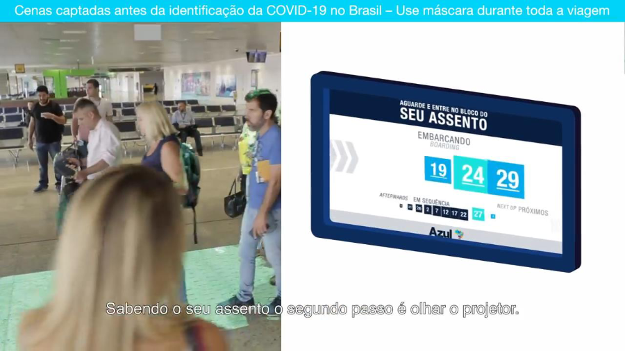
UNITED INTELLIGENCE
TRÍ TUỆ HỢP NHẤT
INSTINCTIVE · INSTANT · INSIGHT · INTELLIGENT
BẢN NĂNG · TỨC THÌ · THẤU HIỂU · THÔNG MINH
Slide 48 dẫn một video trên Vimeo, quay trong đường hầm thử nghiệm xe. Slide 49 xếp bốn chữ cùng bắt đầu bằng “I” thành bốn tầng của trí tuệ.
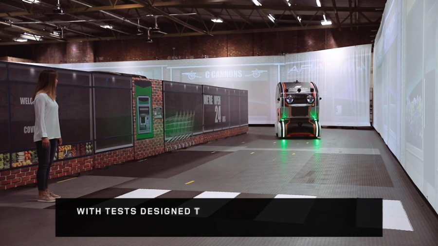
Dr. Agnis Stibe, PhD — MIT Media Lab
“Persuasive Cities for Sustainable Wellbeing”
Tuesday, Dec. 8, 2015 · 4:00–5:30pm · MIT Media Lab, E14-633
TS. Agnis Stibe — MIT Media Lab
“Những thành phố thuyết phục vì phúc lợi bền vững”
Thứ Ba, ngày 8 tháng 12 năm 2015 · 16:00–17:30 · MIT Media Lab, E14-633
Slide 51 là ảnh chân dung trắng đen của diễn giả khi trình bày. Slide 52 không có chữ: hình một con khỉ đang cầm chiếc điện thoại — công nghệ đã len vào cả những nơi không ngờ.
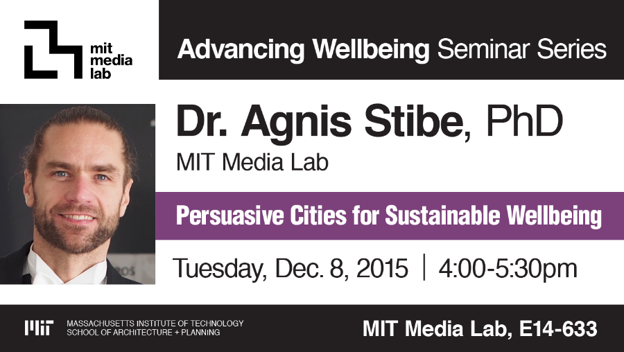
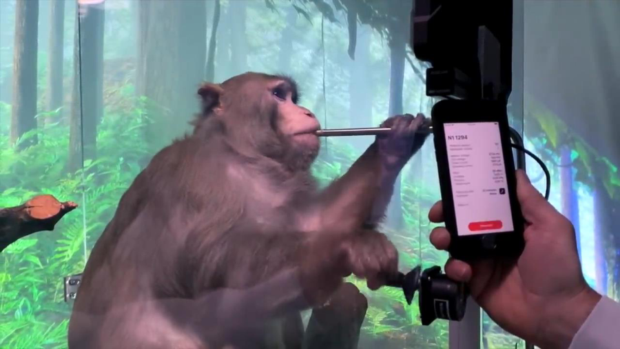
MAN-MACHINE SYMBIOSIS
CỘNG SINH NGƯỜI – MÁY
Video một con robot bốn chân đi lại trong nhà giữa hai người — máy làm phần việc của máy, người vẫn giữ vai trò dẫn dắt.
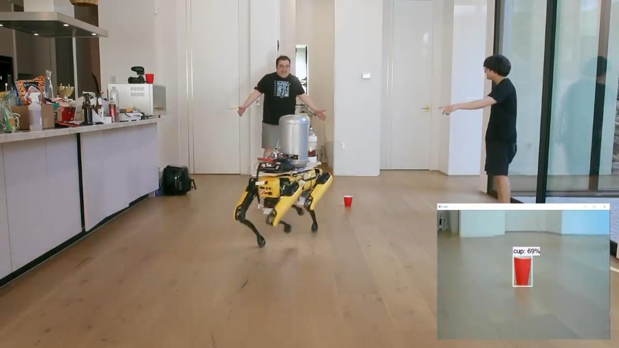
All PEVs · 0:20 · 59.6% pedal · 40.4% electric
Tất cả xe điện cá nhân · 0:20 · 59,6% đạp chân · 40,4% chạy điện
Ba slide tư liệu về các dự án của diễn giả: một góc làm việc tại nhà, loạt ảnh xe điện cá nhân chạy thử ban đêm kèm số liệu tỷ lệ đạp chân và chạy điện, và bàn mô hình thành phố tương tác tại MIT Media Lab.
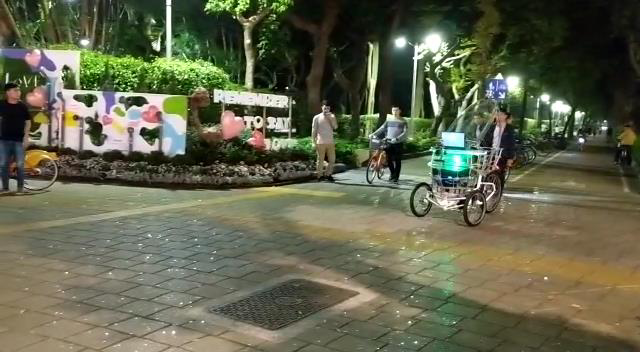
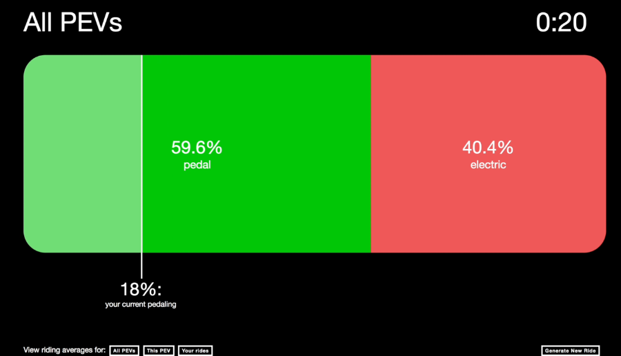
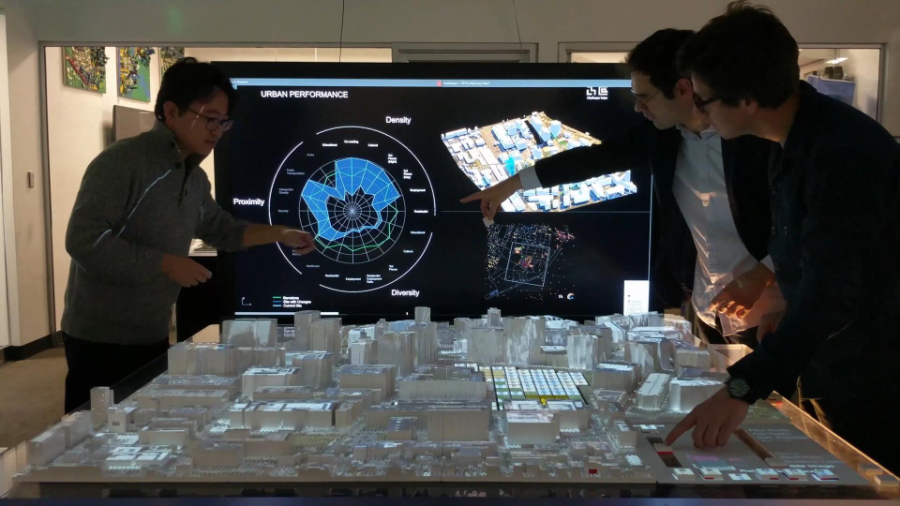
“The CAIO has the responsibility to link all the core corporate processes to the ever-growing potential of AI.”
Agnis Stibe — Artificial Intelligence Program Director
“Giám đốc AI (CAIO) có trách nhiệm kết nối toàn bộ các quy trình cốt lõi của doanh nghiệp với tiềm năng không ngừng lớn lên của AI.”
Agnis Stibe — Giám đốc Chương trình Trí tuệ Nhân tạo
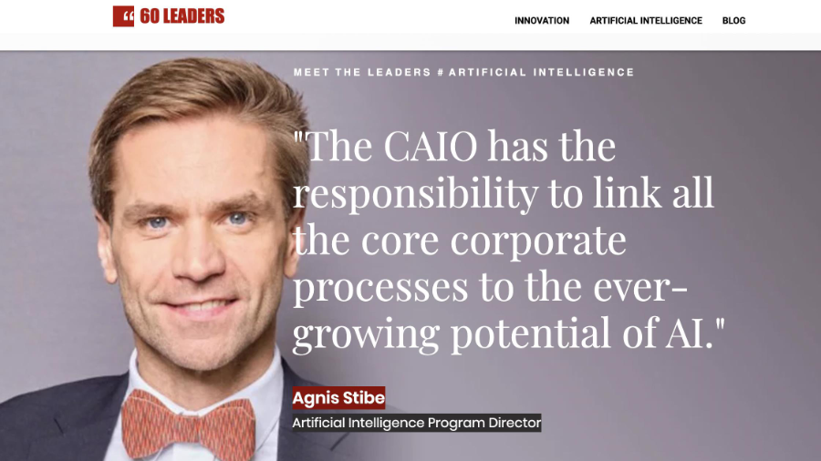
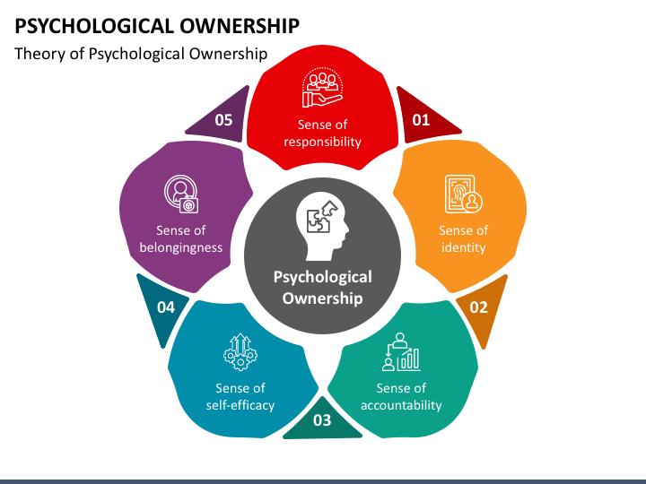
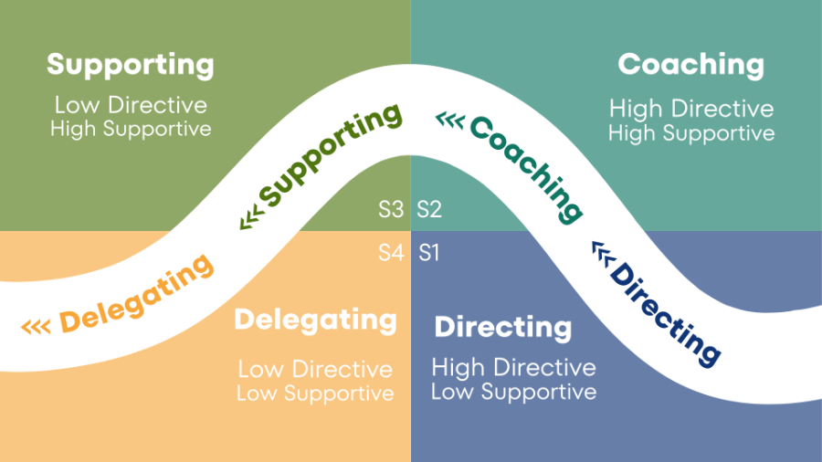
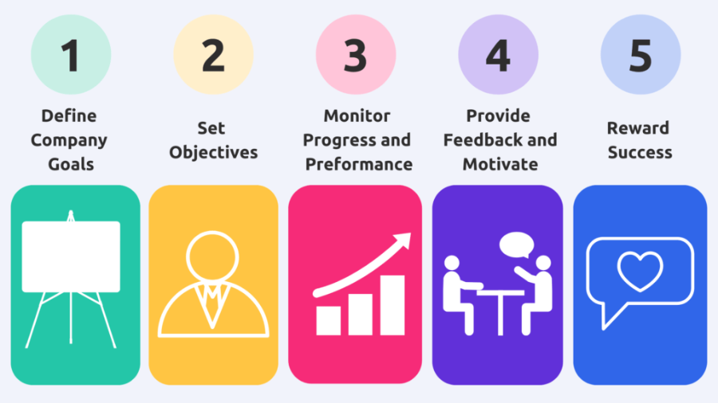
“Rover’s all waste in one place”
“Toàn bộ phần thải của tàu được dồn về một chỗ”
Slide 62: ảnh một người đi bộ trên con đường mòn trong rừng. Slide 63: ảnh bề mặt sao Hoả với dòng chữ PERSEVERANCE — sự bền bỉ là điều kiện của mọi chuyển hoá.
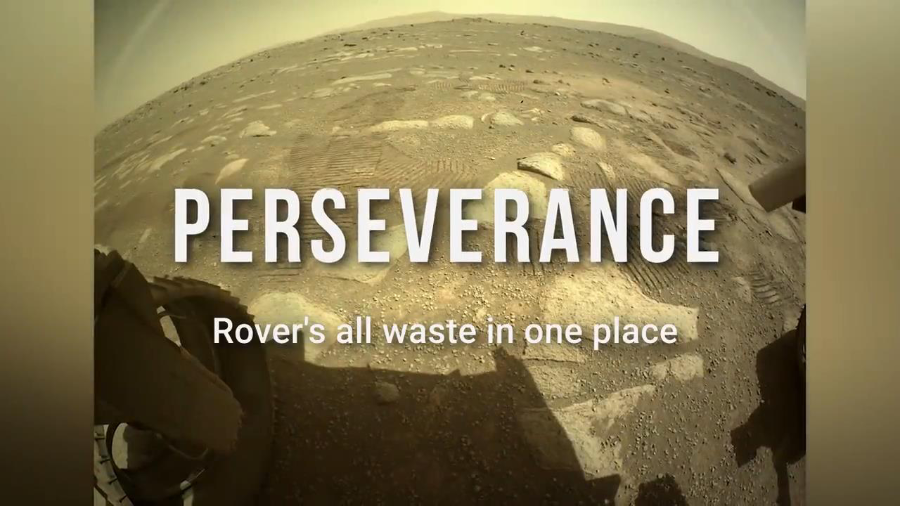
KEY TAKEAWAYS
NHỮNG ĐIỀU CẦN NHỚ
- Delegate outcomes, not just tasks – clarify the expected result, ownership, decision authority, and success criteria.
- Match work to capability – assign responsibilities based on strengths, readiness, priorities, and development opportunities.
- Accountability is clarity + ownership + follow-through – people perform better when they know what they own and how success will be measured.
- Empower without micromanaging – establish clear boundaries and checkpoints while giving people autonomy over execution.
- Use HAI to amplify team performance – combine human judgment, creativity, and contextual understanding with AI speed, analysis, and automation.
- Giao kết quả, không chỉ giao đầu việc. Hãy nói rõ kết quả kỳ vọng, ai làm chủ, quyền ra quyết định đến đâu và thành công được đo bằng gì.
- Giao việc đúng năng lực. Phân công dựa trên điểm mạnh, mức độ sẵn sàng, thứ tự ưu tiên và cơ hội phát triển của từng người.
- Trách nhiệm giải trình = rõ ràng + làm chủ + theo đến cùng. Người ta làm tốt hơn khi biết mình chịu trách nhiệm phần nào và thành công sẽ được đo thế nào.
- Trao quyền mà không quản lý vi mô. Đặt ranh giới và các mốc kiểm tra rõ ràng, còn cách thực thi thì để người làm tự quyết.
- Dùng HAI để nhân hiệu suất của đội ngũ. Kết hợp phán đoán, sáng tạo và hiểu biết bối cảnh của con người với tốc độ, năng lực phân tích và tự động hoá của AI.
KEY TAKEAWAYS
NHỮNG ĐIỀU CẦN NHỚ
- Put the right intelligence on the right task – consciously decide what should be done by humans, AI, or through human–AI collaboration.
- Reduce cognitive load by designing clarity – simplify roles, priorities, communication channels, workflows, and decision rights.
- Remove bottlenecks, not just push harder – identify dependencies, unnecessary approvals, unclear ownership, and overloaded team members.
- Create psychological safety with accountability – enable people to raise concerns, acknowledge mistakes, challenge assumptions, and learn without weakening responsibility for results.
- Build continuous improvement into execution – use feedback, reflection, behavioral learning, and AI-enabled insights to improve the team over time.
- Đặt đúng loại trí tuệ vào đúng việc. Hãy quyết định có ý thức: việc nào do con người làm, việc nào để AI, việc nào cần con người và AI cùng làm.
- Giảm tải nhận thức bằng cách thiết kế sự rõ ràng. Đơn giản hoá vai trò, thứ tự ưu tiên, kênh trao đổi, luồng công việc và quyền ra quyết định.
- Tháo nút thắt thay vì chỉ thúc mạnh hơn. Hãy nhận diện các mối phụ thuộc, những phê duyệt không cần thiết, phần trách nhiệm chưa rõ và những thành viên đang quá tải.
- Tạo an toàn tâm lý song hành với trách nhiệm giải trình. Để mọi người dám nêu lo ngại, thừa nhận sai sót, phản biện giả định và học hỏi, mà không làm nhẹ đi trách nhiệm với kết quả.
- Đưa cải tiến liên tục vào chính việc thực thi. Dùng phản hồi, suy ngẫm, học hỏi từ hành vi và các phát hiện do AI hỗ trợ để đội ngũ tốt lên theo thời gian.
CORE MESSAGE
THÔNG ĐIỆP CỐT LÕI
- High-performing teams emerge when leaders create clarity, ownership, autonomy, intelligent human–AI collaboration, and continuous learning.
- Enabling faster execution without increasing unnecessary cognitive load.
- Đội ngũ hiệu suất cao hình thành khi người lãnh đạo tạo ra sự rõ ràng, tinh thần làm chủ, quyền tự chủ, sự hợp tác thông minh giữa con người và AI, cùng việc học hỏi liên tục.
- Nhờ đó việc thực thi nhanh hơn mà không làm tăng tải nhận thức một cách không cần thiết.
AgnisStibe.com — hyper-performance
AgnisStibe.com — hiệu suất vượt trội
Slide 67 chiếu một đoạn phỏng vấn Steve Jobs. Slide 68 quay lại hình âm dương, kèm ảnh chụp kênh YouTube của diễn giả.
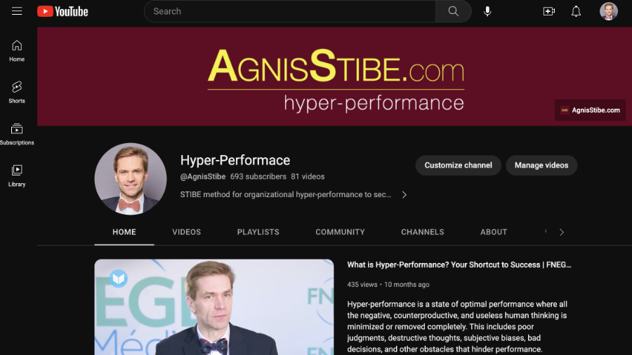
Assoc. Professor Agnis Stibe
RMIT University Vietnam, Saigon South Campus
Phó Giáo sư Agnis Stibe
Đại học RMIT Việt Nam, cơ sở Nam Sài Gòn